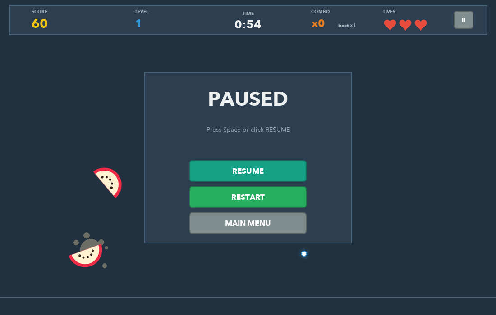

Trackpad slicing
Swipe fast to cut. The speed of every swipe is measured, so slow moves only aim.
APP project · Python desktop game
A fruit slicing game made with Python and Tkinter. Swipe on your trackpad to cut the fruit, avoid the bombs, and get on the leaderboard.

Swipe fast to cut. The speed of every swipe is measured, so slow moves only aim.
Gravity, spinning fruit split along your swipe, juice, combos, golden stars, bombs and levels.
Players, games, high scores and statistics saved in a SQLite database.
Pre-drawn images, reused canvas items and only updating what changed.
Move your finger quickly across the trackpad (or move the mouse) through the fruit.
Cut 2 or more fruits in one swipe for bonus points. Golden stars are worth 20.
Cutting a bomb costs a life. You have 3 lives per round.
Press Space or P, or click the II button.


A fruit is cut when the shortest distance from its centre C to the swipe
A → B is at most its radius, and the swipe is fast enough:
t = clamp(((C − A) · (B − A)) / |B − A|², 0, 1) P = A + t (B − A) cut ⇔ |C − P| ≤ r and speed ≥ threshold


Gesture Slice is a desktop application: it opens its own window, so it runs on your computer, not in the browser. You need Python 3.9 or newer.
git clone https://github.com/s-shriya2288/APP-project.git cd APP-project
python3 -m venv .venv source .venv/bin/activate # Windows: .venv\Scripts\activate
pip install -r requirements.txt
python main.py